- on Wed 29 December 2021
I recently held a presentation at the 10th MicroTCA Workshop for Industry and Research, where I presented some hardware we have developed, discussed the advantages of using SoCs, and showed a couple of examples where we successfully leveraged the features of these devices.
At my day job the dataflow through the system is relatively simple, the data is captured in large chunks and the direction is always well defined, i.e. for data acquisition systems from FPGA to CPU and then into the network/storage.
On the other hand, there are a lot of applications that can benefit from a tighter coupling between the CPU and the FPGA, for example: HW-accelerated compression and decompression, HW-accelerated regex, HW-accelerated graph traversal, machine learning accelerators,...
This is why I have decided to explore all ports available in Zynq US+ MPSoC in my free time and to describe this adventure in this blog post.
Introduction
Xilinx Zynq UltraScale+ MPSoC provides four different types of interfaces between the so-called Processing System (PS) and Programmable Logic (PL), leveraging the wide variety of different protocols standardized in Advanced Microcontroller Bus Architecture.
In this blog post I will explore the performance characteristics of three different interfaces:
- Accelerator Coherency Port interface
- High-Performance Coherent interface
- High-Performance interface
AXI Coherency Extension port is the most interesting of all and it deserves a dedicated blog post.
The purpose of this blog post is to gather information on how to make the interfaces work correctly and to measure the performance in different scenarios. The information on various interfaces is scattered across different documents (Zynq UltraScale+ Device Technical Reference Manual, CoreLink CCI-400 Cache Coherent Interconnect Technical Reference Manual, and Arm Cortex-A53 MPCore Processor Technical Reference Manual), Xilinx wiki pages, Xilinx Answer Records and various forum threads and GitHub issues.
PL-PS Interfaces
Shown in the figure below are the interfaces between PS and PL.
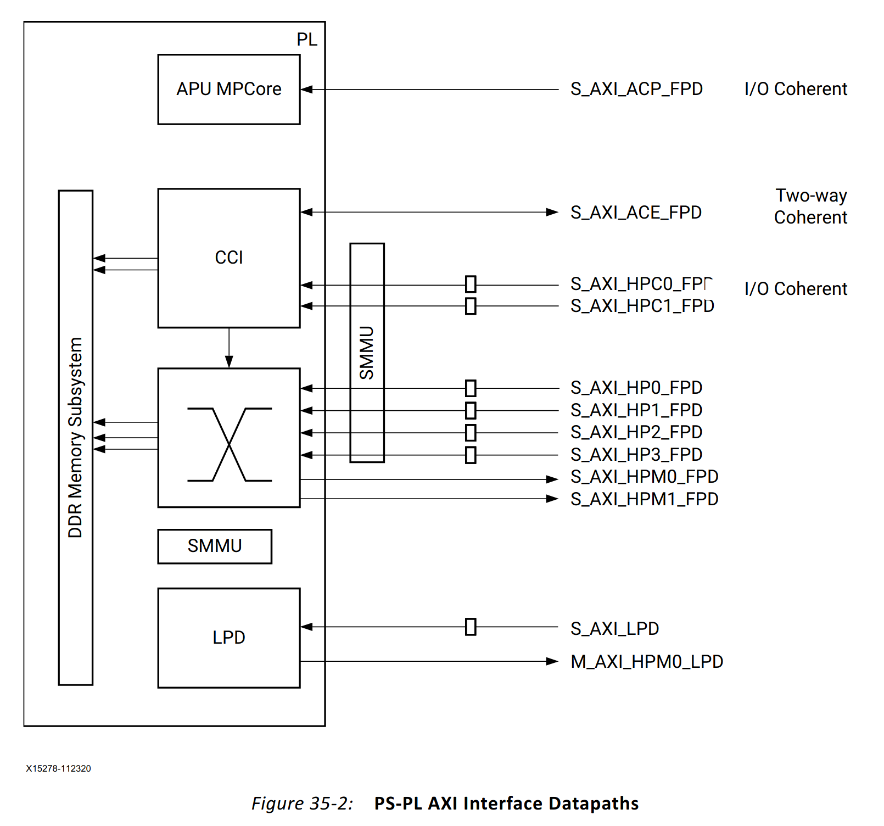
In this blog post I will focus on the following three interfaces:
High-Performance interface
This interface connects directly to the DDR Memory Subsystem and completely bypasses the Cache Coherent Interconnect and the APU. According to UG1085, this interface is ideal for large datasets. The software needs to bypass the cache when accessing the data.
High-Performance Coherent interface
This interface is connected to a port on CCI-400 interconnect. When configured accordingly the memory transactions are communicated to the APU, providing tighter integration with software.
AR 69446 mentions that:
The HPC ports are preferable to the ACP port in most applications as they provide higher bandwidth and do not disturb the contents of the processor L2 cache.
Accelerator Coherency Port interface
Cortex-A53 TRM describes the ACP interface in the following way:
The ACP is provided to reduce software cache maintenance operations when sharing memory regions with other masters, and to allow other masters to allocate data into the L2 cache.
According to UG1085:
[...] ACP is optimal for medium-grain acceleration, such as a block-level crypto accelerator and video macro-block level processing.
Motivation
Cache-aware interfaces allow tighter integration between SW and HW which is of particular interest for accelerating workloads with FPGA. Instead of explicitly copying the data to the FPGA, doing the computation in the FPGA, and copying data back from the FPGA, with cache-aware interfaces we can modify the data directly in the program memory, thus skipping the unnecessary copying.
I have prepared a Jupyter notebook that demonstrates this approach. An AXI Proxy (explained in detail in the next chapter) is used to read from and to a Numpy array.
The screenshot below shows the most important part of the notebook, where the AXI Proxy is used to modify the content of the Numpy array from the FPGA side.
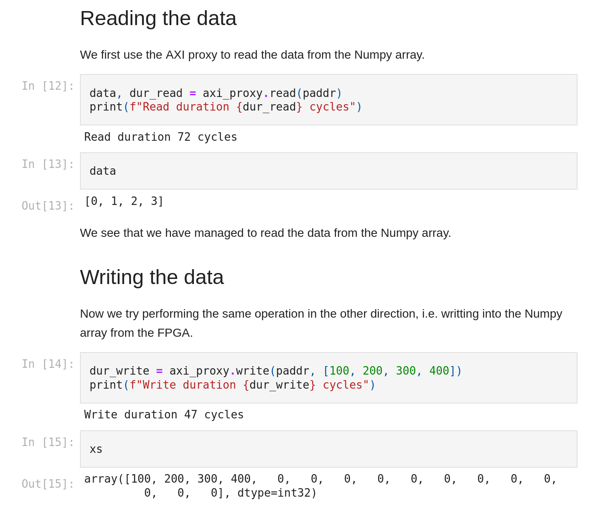
Test setup
Hardware
All measurements were performed on an Ultra96-V2 board. The board contains an XCZU3EG, 2GB of DDR4 memory connected to the Processing System, and not much more.
The blue LED near the USB connector is used to indicate activity on AXI PL-PS ports:
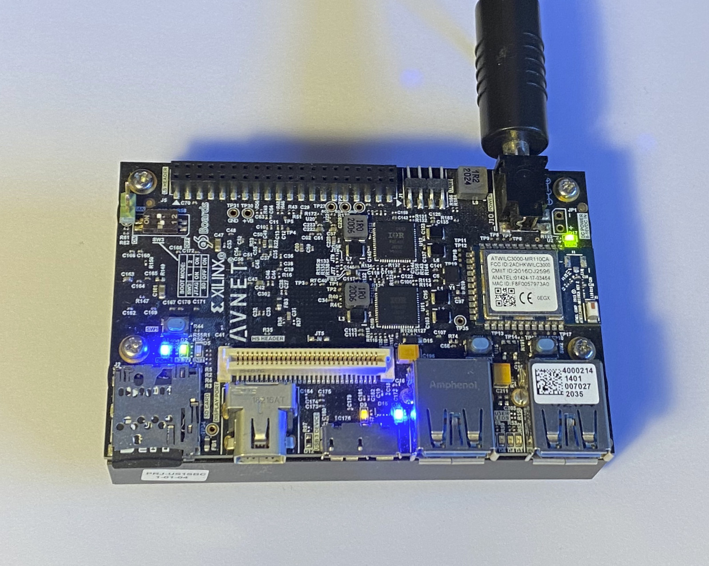
AXI Proxy
AXI Proxy IP acts (as the name suggests) as a proxy between an AXI4-Lite subordinate port and an AXI4 manager port. With this IP we can measure read and write latency on all aforementioned ports.
The subordinate port provides registers where the software can prepare the data
to be written, retrieve the data which was read, start read and write
transactions and measure the time an individual transaction took. The
transaction time is measured in clock cycles between an address being provided
(AxVALID going high) and a full response is received. To match the
requirements of the ACP interface, all transactions are 64-byte long (4 beats,
128-bit wide). The software has also the possibility to set some of the AXI
side-band
signals
which affect the caching properties: AxCACHE, AxPROT, and AxUSER.
Shown in the figure below is the Vivado block diagram used to perform the tests with AXI Proxy. There are three instances of the IP, each connected to one of the ports on the Zynq MPSoC block. System ILA is used to provide additional visibility of the connections between AXI Proxy and PL-PS ports on the Zynq UltraScale+ MPSoC block.
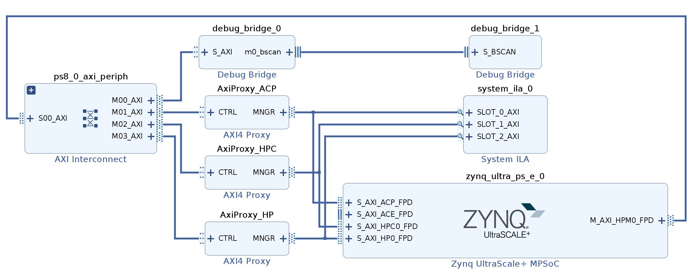
AXI Traffic Generator
AXI Traffic Generator can generate a sequence of AXI bursts with an incrementing address and a known pattern, which simulates behavior of a DMA. With this IP we can measure the read and write throughput of transactions of different sizes.
Also here each AXI burst contains 64 bytes (4 beats, 128-bit). The IP measures the number of clock cycles the entire transfer took.
Shown in the figure below is the Vivado block diagram used to perform the tests with Jan's AXI Traffic Generator. As with the AXI Proxy, there are three instances and a System ILA to observe the transactions.
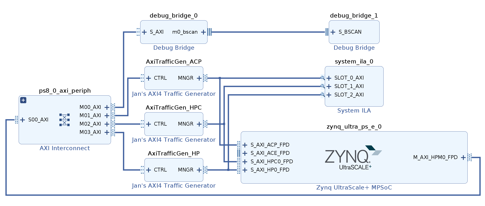
Yocto layer
To generate the SD card image containing:
- the FPGA bitstreams,
- FPGA manager (to download the bitstreams),
- device tree overlays (the description of FPGA),
- programs to control the IPs,
- the required Python libraries and
- Jupyter notebooks
I have created a Yocto layer, available on my GitHub:
meta-zynqmp-pl-ps-interfaces.
The usage description is available in the README.md.
Configuration
u-dma-buf
For use with ACP and HPC port, the u-dma-buffer needs to have the
dma-coherent flag set.
This is achieved with an entry in the device tree.
HP port
HP port requires no special configuration on the FPGA side, and the u-dma-buf
needs to be opened with the O_SYNC flag.
HPC port
Addressing
The HPC by default uses physical addressing, although the SMMU can be configured to use the virtual addressing, as mentioned in UG1085:
"Comparably, S_AXI_HPCx_FPD uses a virtual address [...]"
FSBL and reg.init
A couple of patches for the FSBL configure CCI in the correct configuration so that the transactions on the HPC port are considered shareable.
ACP port
The ACP interface is in detail described in ARM Cortex-A53 MPCore Processor Technical Reference Manual.
Since this interface provides direct access into L2 cache, and therefore the
transfer needs to follow certain restrictions: to achieve the best performance
the transfers should be 64 bytes long (one cache line), and AxCACHE and
AxPROT signals need to be set to certain values.
regs.init
regs.init is used to write to the APU Configuration Register (LPD_SLCR), which
enables the broadcasting of the transactions towards the CCI, as described on
Xilinx Wiki on Cache
Coherence.
Measurements
Throughput/interface utilization
The throughput was measured with the AXI Traffic Generator, described in one of the previous chapters. What we measure here is not strictly throughput but interface utilization, i.e. in what percentage of the clock cycles was there a beat transmitted on the port. One can easily derive the throughput (in B/s) from the interface parameters (16-byte wide, running at 250 MHz). During the tests, only one interface was active at the time.
- The entire measurement procedure is documented in a Jupyter notebook: 00-traffic-gen.ipynb
- The FPGA project for Ultra96-V2 board is available here: example-13-axi-traffic-gen/ultra96v2_prj
The final results are presented in the graph below.
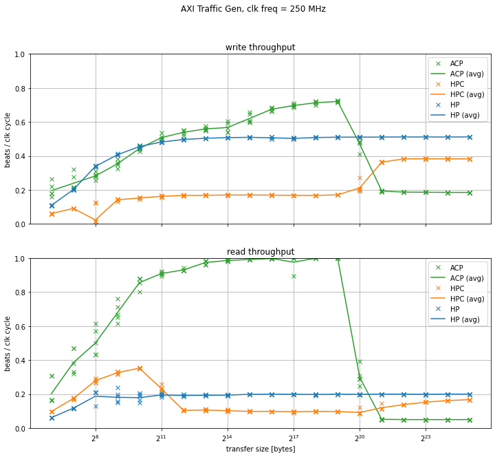
The HP port exhibits a typical behavior of a process where the start-up time plays a significant role - the interface utilization is lower for smaller transactions, but approaches an asymptotical limit at a certain size. All ports use the same settings (4 transactions in flight, 64 bytes per transaction) to make the comparison between different ports fair; this value is clearly too low for the long latencies of DDR4. To achieve higher throughput, one should increase the burst length.
CCI adds additional latency to the HPC port and the throughput on this port is even lower. Interestingly, once the transfer size is larger than the L2 cache, the interface utilization starts getting higher. This would indicate that the cache switches to write-through "mode" once it has seen a certain access pattern; the CCI400 TRM is quite vague in this regard.
The ACP benefits from the L1 and L2 caches and the interface utilization is the highest of all ports for small transfers (below 1 MB). Once the transfer size gets larger than the L2 cache size the interface utilization is severely affected.
Latency
The latency was measured with AXI Proxies. A single measurement sample was obtained with the following procedure:
- the SW generates a random value and instructs AXI Proxy to write this random value into a shared buffer through one of the ports
- the SW then reads the data from the buffer and compares it to what AXI Proxy has written
- the SW then generates another random value and writes it directly to the buffer
- the SW then instructs the AXI Proxy to read the data and then compares the value to the previously generated value
With this procedure we can check that the writes and reads are visible in both directions, and this procedure also mimics a typical usage of an FPGA accelerator. During the tests, only one interface was active at the time.
- The entire measurement procedure is documented in a Jupyter notebook: 02-axi-proxy-on-repeat.ipynb
- The FPGA project for Ultra96 board is available here: example-12-axi-proxy/ultra96v2_prj
The results of the latency measurements are presented in the graph below.
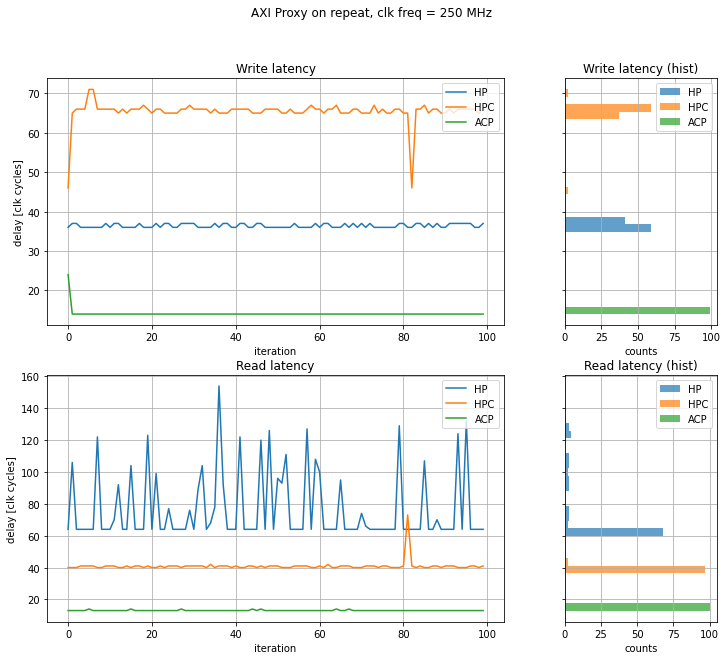
On the cached interfaces (ACP and HPC) we see, expectedly, very uniform latency values. On the other side, on the HP interface we see that the latency to the DDR4 is quite high and also quite variable, presumably because the transaction needs to be scheduled after some other transactions or memory refresh is currently being performed.
There is an interesting start-up behavior on the ACP and HPC interfaces. I am assuming that the L2 cache is an inclusive cache and contains all lines from the L1 cache. When a write request arrives at the L2 cache and the line is in Invalid state, the L2 can immediately decide that it can acknowledge the write transaction. When the write request arrives at the L1 cache, however, the L1 cache needs to first inform the L2 cache to invalidate the line, and only then proceed by acknowledging the write transaction.
Conclusion
In this blog post I have explored three different types of interfaces between PL and PS in Zynq UltraScale+ MPSoC. Different types of interfaces provide different trade-offs in terms of coupling between SW/HW, ease of use, throughput, and latency. Cache-aware interfaces can be used to access the data structures in running software and can therefore be used to seamlessly accelerate certain parts of the program.
Some edge cases were not explored (e.g. increasing the burst length for the interface utilization measurement), but I decided to skip those to make the blog post short(er). With Zynq US+ MPSoC boards being ubiquitous, this task is "left as an exercise to the reader".
I hope that this blog post, alongside the Vivado projects and the Yocto layer can be used as a reference on how to use those ports.
Appendix
System ILA waveforms
AXI Proxy
HP port
root@u96v2-sbc:~# app-axi-proxy --interface hp --use-osync
Udmabuf
name = axi:udmabuf@0x0
virt addr = 0xffff9c0c7000
phys addr = 0x5e100000
size = 33554432
flags = 0x101002
UioDevice{number = 5, name = AxiProxy, addr = 0xa0020000, size = 65536, note = hp}
UioDevice{number = 6, name = AxiProxy, addr = 0xa0030000, size = 65536, note = hpc}
UioDevice{number = 4, name = AxiProxy, addr = 0xa0040000, size = 65536, note = acp}
UioDevice{number = 1, name = axi-pmon, addr = 0xfd0b0000, size = 65536, note = }
UioDevice{number = 2, name = axi-pmon, addr = 0xfd490000, size = 65536, note = }
UioDevice{number = 0, name = axi-pmon, addr = 0xffa00000, size = 65536, note = }
UioDevice{number = 3, name = axi-pmon, addr = 0xffa10000, size = 65536, note = }
AxiProxy info:
id reg = 0xa8122081
version = 0.3.1
SW read, HW written:
10, 10
20, 20
30, 30
40, 40
readback, expected:
10, 10
20, 20
30, 30
40, 40
stats: dur_wr = 36, dur_rd = 70
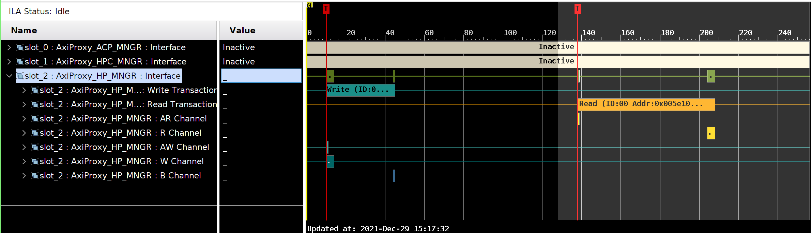
HPC port
root@u96v2-sbc:~# app-axi-proxy --interface hpc --axi-cache 15 --axi-prot 2 --axi-user 1
Udmabuf
name = axi:udmabuf@0x0
virt addr = 0xffff931d8000
phys addr = 0x5e100000
size = 33554432
flags = 0x2
UioDevice{number = 5, name = AxiProxy, addr = 0xa0020000, size = 65536, note = hp}
UioDevice{number = 6, name = AxiProxy, addr = 0xa0030000, size = 65536, note = hpc}
UioDevice{number = 4, name = AxiProxy, addr = 0xa0040000, size = 65536, note = acp}
UioDevice{number = 1, name = axi-pmon, addr = 0xfd0b0000, size = 65536, note = }
UioDevice{number = 2, name = axi-pmon, addr = 0xfd490000, size = 65536, note = }
UioDevice{number = 0, name = axi-pmon, addr = 0xffa00000, size = 65536, note = }
UioDevice{number = 3, name = axi-pmon, addr = 0xffa10000, size = 65536, note = }
AxiProxy info:
id reg = 0xa8122081
version = 0.3.1
SW read, HW written:
10, 10
20, 20
30, 30
40, 40
readback, expected:
10, 10
20, 20
30, 30
40, 40
stats: dur_wr = 46, dur_rd = 40
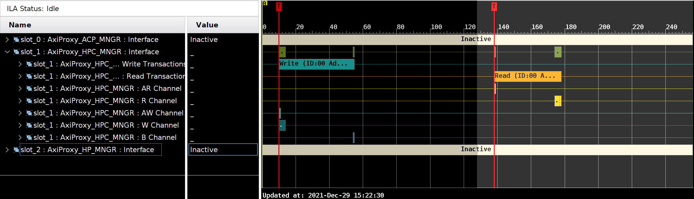
ACP port
root@u96v2-sbc:~# app-axi-proxy --interface acp --axi-cache 15 --axi-prot 2 --axi-user 1
Udmabuf
name = axi:udmabuf@0x0
virt addr = 0xffffa1356000
phys addr = 0x5e100000
size = 33554432
flags = 0x2
UioDevice{number = 5, name = AxiProxy, addr = 0xa0020000, size = 65536, note = hp}
UioDevice{number = 6, name = AxiProxy, addr = 0xa0030000, size = 65536, note = hpc}
UioDevice{number = 4, name = AxiProxy, addr = 0xa0040000, size = 65536, note = acp}
UioDevice{number = 1, name = axi-pmon, addr = 0xfd0b0000, size = 65536, note = }
UioDevice{number = 2, name = axi-pmon, addr = 0xfd490000, size = 65536, note = }
UioDevice{number = 0, name = axi-pmon, addr = 0xffa00000, size = 65536, note = }
UioDevice{number = 3, name = axi-pmon, addr = 0xffa10000, size = 65536, note = }
AxiProxy info:
id reg = 0xa8122081
version = 0.3.1
SW read, HW written:
10, 10
20, 20
30, 30
40, 40
readback, expected:
10, 10
20, 20
30, 30
40, 40
stats: dur_wr = 25, dur_rd = 14
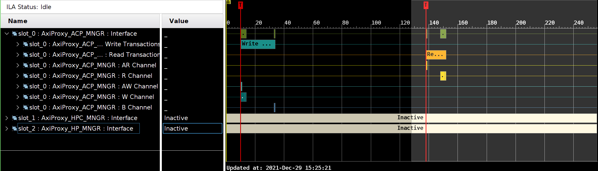
HP port
root@u96v2-sbc:~# app-axi-traffic-gen --count 32 --interface hp --use-osync
UioDevice{number = 4, name = AxiTrafficGen, addr = 0xa0040000, size = 65536, note = acp}
UioDevice{number = 5, name = AxiTrafficGen, addr = 0xa0050000, size = 65536, note = hp}
UioDevice{number = 6, name = AxiTrafficGen, addr = 0xa0060000, size = 65536, note = hpc}
UioDevice{number = 1, name = axi-pmon, addr = 0xfd0b0000, size = 65536, note = }
UioDevice{number = 2, name = axi-pmon, addr = 0xfd490000, size = 65536, note = }
UioDevice{number = 0, name = axi-pmon, addr = 0xffa00000, size = 65536, note = }
UioDevice{number = 3, name = axi-pmon, addr = 0xffa10000, size = 65536, note = }
AxiTrafficGen info:
id reg = 0xa8172a9e
version = 0.9.7
Udmabuf
name = axi:udmabuf@0x0
virt addr = 0xffff954fe000
phys addr = 0x5e100000
size = 33554432
flags = 0x101002
Transfering 32 bursts
Memory check (size = 32 bursts) successfully completed
Memory check (size = 32 bursts) successfully completed
stats: rd cyc = 670, wr cyc = 265, rd_ok = 128
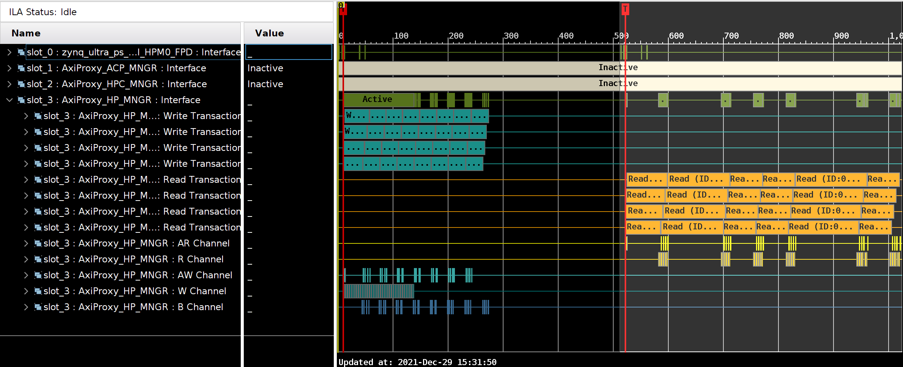
HPC port
root@u96v2-sbc:~# app-axi-traffic-gen --count 32 --interface hpc --axi-cache 15 --axi-prot 2 --axi-user 1
UioDevice{number = 4, name = AxiTrafficGen, addr = 0xa0040000, size = 65536, note = acp}
UioDevice{number = 5, name = AxiTrafficGen, addr = 0xa0050000, size = 65536, note = hp}
UioDevice{number = 6, name = AxiTrafficGen, addr = 0xa0060000, size = 65536, note = hpc}
UioDevice{number = 1, name = axi-pmon, addr = 0xfd0b0000, size = 65536, note = }
UioDevice{number = 2, name = axi-pmon, addr = 0xfd490000, size = 65536, note = }
UioDevice{number = 0, name = axi-pmon, addr = 0xffa00000, size = 65536, note = }
UioDevice{number = 3, name = axi-pmon, addr = 0xffa10000, size = 65536, note = }
AxiTrafficGen info:
id reg = 0xa8172a9e
version = 0.9.7
Udmabuf
name = axi:udmabuf@0x0
virt addr = 0xffffa781e000
phys addr = 0x5e100000
size = 33554432
flags = 0x2
Transfering 32 bursts
Memory check (size = 32 bursts) successfully completed
Memory check (size = 32 bursts) successfully completed
stats: rd cyc = 391, wr cyc = 756, rd_ok = 128
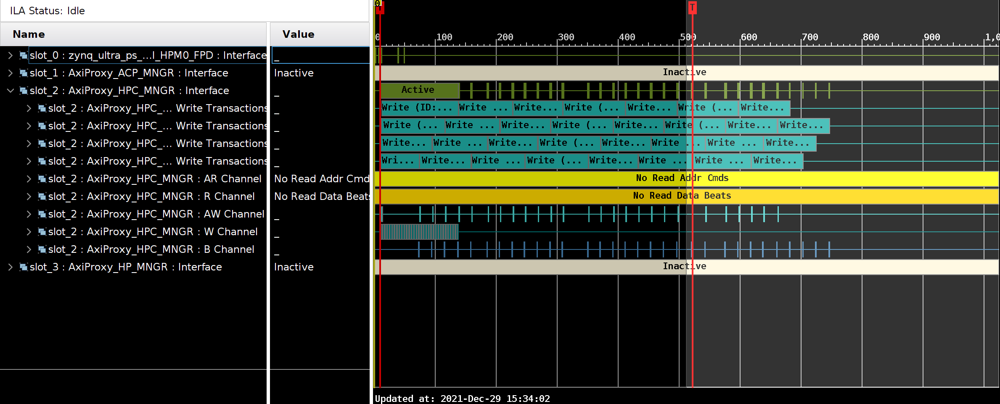
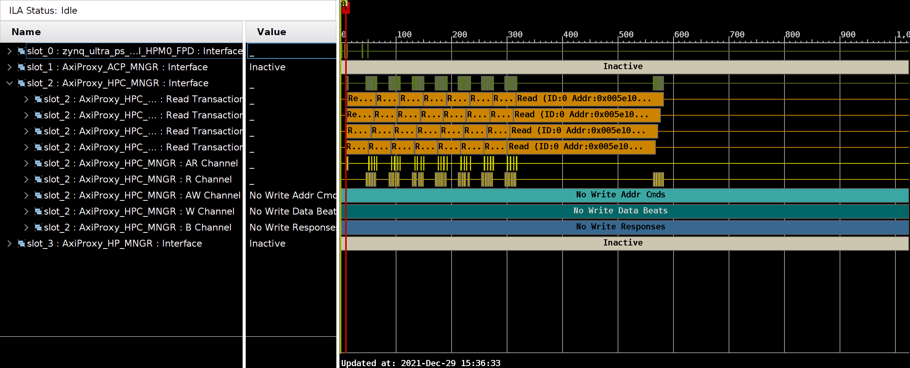
ACP port
root@u96v2-sbc:~# app-axi-traffic-gen --count 32 --interface acp --axi-cache 15 --axi-prot 2 --axi-user 1
UioDevice{number = 4, name = AxiTrafficGen, addr = 0xa0040000, size = 65536, note = acp}
UioDevice{number = 5, name = AxiTrafficGen, addr = 0xa0050000, size = 65536, note = hp}
UioDevice{number = 6, name = AxiTrafficGen, addr = 0xa0060000, size = 65536, note = hpc}
UioDevice{number = 1, name = axi-pmon, addr = 0xfd0b0000, size = 65536, note = }
UioDevice{number = 2, name = axi-pmon, addr = 0xfd490000, size = 65536, note = }
UioDevice{number = 0, name = axi-pmon, addr = 0xffa00000, size = 65536, note = }
UioDevice{number = 3, name = axi-pmon, addr = 0xffa10000, size = 65536, note = }
AxiTrafficGen info:
id reg = 0xa8172a9e
version = 0.9.7
Udmabuf
name = axi:udmabuf@0x0
virt addr = 0xffff9469a000
phys addr = 0x5e100000
size = 33554432
flags = 0x2
Transfering 32 bursts
Memory check (size = 32 bursts) successfully completed
Memory check (size = 32 bursts) successfully completed
stats: rd cyc = 140, wr cyc = 248, rd_ok = 128
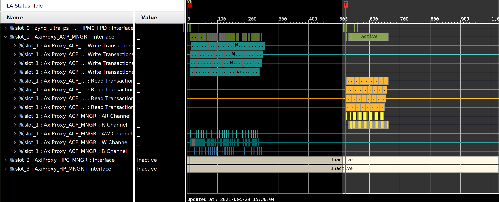
FSBL output
Xilinx Zynq MP First Stage Boot Loader
Release 2021.1 Jun 6 2021 - 07:07:32
MultiBootOffset: 0x0
Reset Mode : System Reset
Platform: Silicon (4.0), Running on A53-0 (64-bit) Processor, Device Name: XCZU3EG
SD0 Boot Mode
PMU Firmware 2021.1 Jun 6 2021 07:07:32
PMU_ROM Version: xpbr-v8.1.0-0
Protection configuration applied
EL = 3
CCI_REG: register dump
offset 0 = 0
offset 10 = 0
offset 14 = 8000003F
offset 18 = 0
offset 1C = 0
offset 40 = 0
CCI_REG: debug enable
CCI_REG: register dump
offset 0 = 0
offset 10 = 0
offset 14 = 8000003F
offset 18 = 0
offset 1C = 0
offset 40 = 3
CCI: enable snoop, ctrl before = C0000000
CCI: enable snoop, ctrl after = C0000001
CCI: shareable override reg - before = 0
CCI: shareable override reg - after = 3
Exit from FSBL